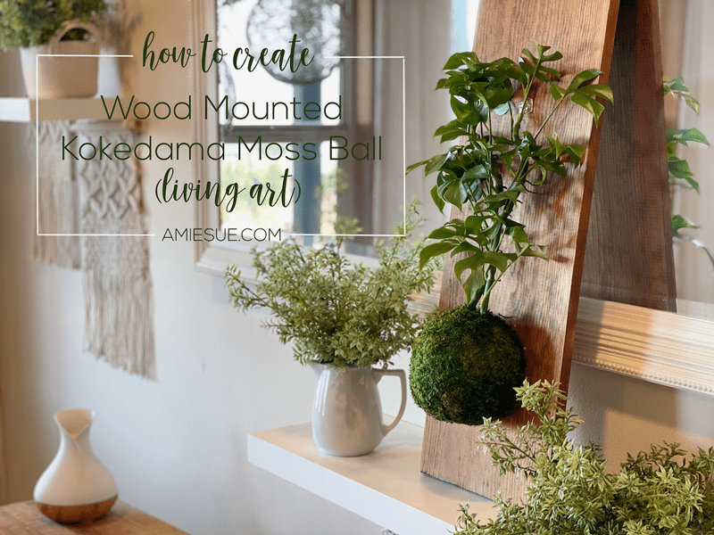
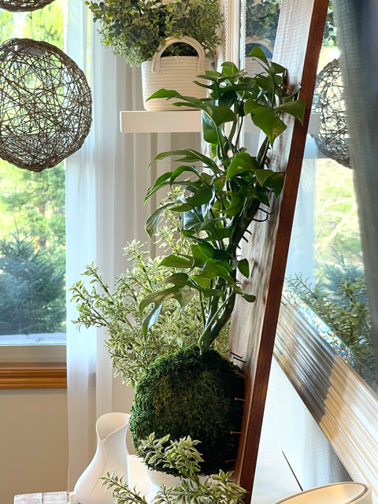
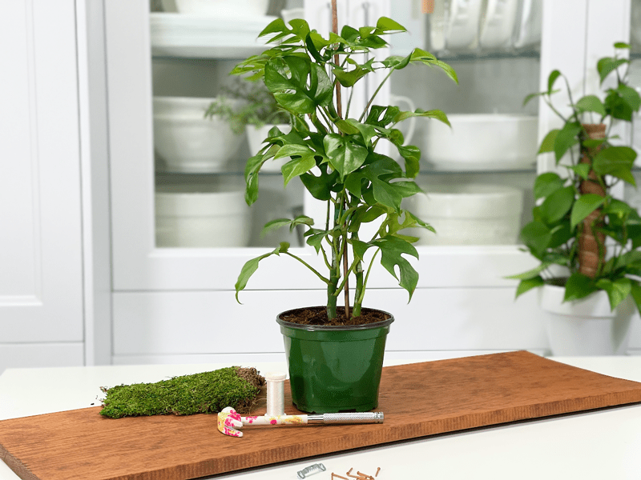

I have fallen in love with the art of creating the Kokedama moss balls and finding ways to display them in unique ways. Today’s post will show how you can hang them on a wall, as you would any framed artwork, where the detail and texture can be appreciated up close and from a distance. You can also just lean the board onto a surface as a way of displaying your work of art.

You landed here to enjoy all the edible and non-edible creations I have made over the past 10+ years but TODAY you are here (unknowingly) to be my therapist, because I am here to confess that I have an addictive personality. I never really thought of myself that way, but as I take a good look at my surroundings, it has become evident. I am addicted to creating recipes, caring for houseplants, making art, sewing, decorating… the list goes on. Once a passion hits me, I run with it! As of late, the Kokedama moss ball art form has taken over my studio.

I don’t even complete one moss ball plant before I am already dreaming up other ways to display them. So, either send help or bring some soil over and we can create one together (of course you would be enabling my addiction, but I’m okay with that. haha).
How Long Will They Last?
In the same way that plants can outgrow their pots, they can also outgrow their mounts. Therefore it is recommended to re-mount the plant every 1-2 years. It will all depend on whether or not the plant is a fast or slow grower. If you see any type of distress on the plant and you can’t correct it through double-checking the plant requirements (light, water, etc.) you might need to remove the plant from the moss ball and replant it in a nursery pot. Just in case you might be wondering, I used a Rhaphidophora tetrasperma plant in this creation. For other plant options, click (here).
Supplies Needed

Select the Wood and Cut
- Cedarwood, redwood, teak, white oak, and mahogany are some of the woods that are perfect for projects that involve water because of their resistance to moisture and mold.
- After selecting the board, there’s a good chance that you will have to cut it to size. If this isn’t an option, see if you have any extra wood pieces lying around in the back of the garage, shed, or shop. Heck, even check your kitchen cabinets… old wooden cutting boards would be perfect for this project as well. Trust me, I have my eye on a few in my kitchen.
- The size of the board will depend on what type of plant you are going to wrap in the moss ball for mounting. Ask yourself, “Does the plant I am using have tall foliage? Does it vine and if so, should I stake it upward (as I did in this post) or will the vines hang downward?” The plant I chose to use is a vining plant and it can either be staked up or the vines can hang. I wanted to stake it upward; therefore I used a tall piece of wood to accommodate some extra growth.
- If need be, you can stain the wood piece so that it matches your decor, plus the stain will put a protective barrier coat on it. I use Old Masters wiping stain on all my staining projects, but use whatever you prefer. For this project, I used the color Special Walnut.